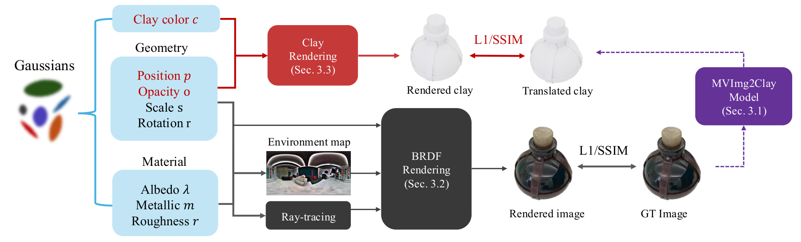
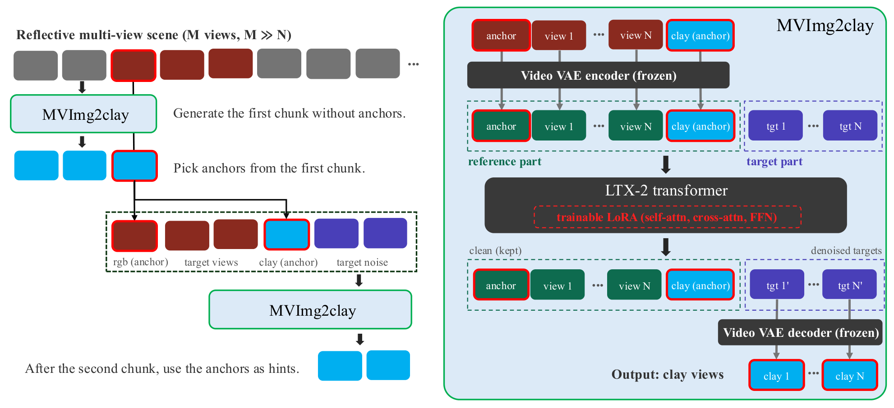
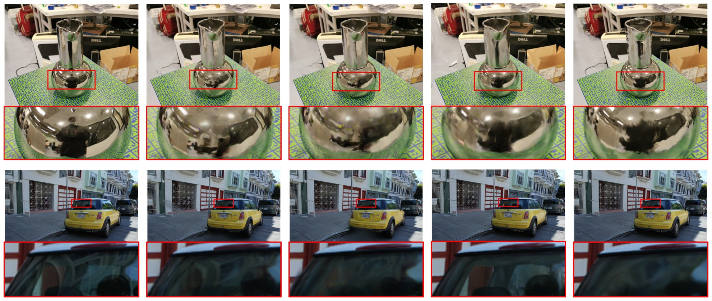

Pygmalion Effect in Vision:
Image-to-Clay Translation for
Reflective Geometry Reconstruction
Abstract
Understanding reflection remains a long-standing challenge in 3D reconstruction due to the entanglement of appearance and geometry under view-dependent reflections. In this work, we present the Pygmalion Effect in Vision, a novel framework that metaphorically “sculpts” reflective objects into clay-like forms through image-to-clay translation. We then introduce a dual-branch design in which a BRDF-based reflective branch and a clay-guided branch share the same Gaussian geometry but operate through independent rendering paths. The clay-guided branch, supervised by the synthesized clay images, provides reflection-free geometric guidance that complements the photometric supervision of the BRDF branch. Experiments on both synthetic and real datasets show consistent improvements in both geometry and photometric metrics. Beyond technical gains, our framework reveals that seeing by unshining, translating radiance into neutrality, can serve as a powerful inductive bias for reflective object geometry learning.
Method
The framework has two parts. A multi-view image-to-clay translator turns the reflective input views of a scene into clay-like renderings of the same views. A dual-branch Gaussian splatting model then reconstructs the scene: a BRDF-based reflective branch is supervised by the input photos, and a clay-guided branch is supervised by the translated clay images. Both branches share one set of Gaussian geometry, so the reflection-free clay supervision shapes the surface while the reflective branch learns material and lighting.
Dual-branch reflective Gaussian splatting

A BRDF-based reflective branch and a clay-guided branch share the same Gaussian geometry. Clay-like images provide reflection-free supervision during early training, stabilizing geometry and improving surface normals.
Multi-view image-to-clay translation

We arrange multi-view images along the temporal axis of a video diffusion model (LTX-2) and fine-tune a LoRA, repurposing temporal coherence as cross-view consistency. For scenes split into multiple chunks, anchor views and their clay translations from the first chunk are used as conditioning to keep later chunks consistent.
Results
Multi-view image-to-clay translation
Left: input views | Right: translated clay views. Views are played in camera-path order. The translator keeps silhouettes and a consistent clay tone across views while removing the view-dependent reflections.
Reflective reconstruction

Our clay-guided supervision yields cleaner geometry, which in turn produces sharper and more faithful reflections.
Reconstructed scenes
Rendered RGB | clay branch | normals, rendered from our trained models along a camera orbit.
BibTeX
@inproceedings{lee2026pygmalion,
title = {Pygmalion Effect in Vision: Image-to-Clay Translation for Reflective Geometry Reconstruction},
author = {Lee, Gayoung and Kim, Junho and Kim, Jin-Hwa and Kim, Junmo},
booktitle = {Advances in Neural Information Processing Systems (NeurIPS)},
year = {2026},
url = {https://arxiv.org/abs/2511.21098}
}